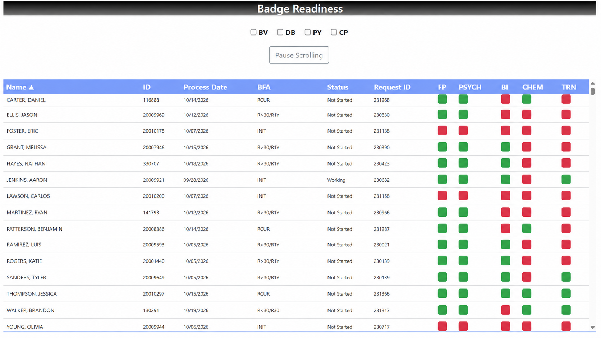
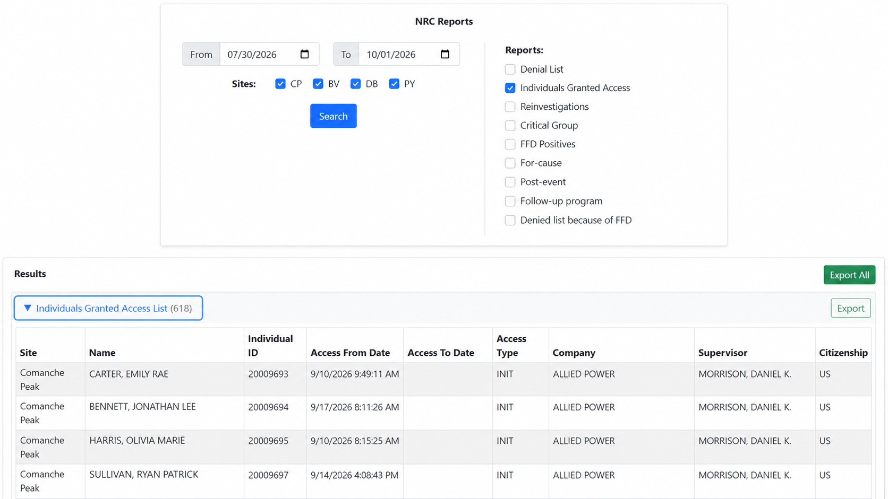

Operational Reporting Platform
Designed and developed a centralized, parameter-driven reporting application that consolidated multiple operational reports into a single self-service experience with dynamic filtering, role-based access, and Excel/PDF export.
The Challenge
Operational reports had accumulated over time as separate pages, queries and workflows, creating an inconsistent experience for users and unnecessary maintenance overhead for developers.
Fragmented Reporting
Different reports existed as separate application paths with their own interfaces, parameters and implementation patterns.
Repeated Development
Similar functionality such as site selection, date filtering, validation and result rendering was repeatedly implemented across individual reports.
Limited Self-Service
Users needed a consistent way to select report criteria, run queries and export results without navigating through multiple disconnected tools.
Growing Maintenance Cost
As the number of reports increased, maintaining individual controllers, views and parameter-handling logic became increasingly inefficient.
The Solution
I consolidated the reporting experience into a single application where each report defines the parameters it needs while sharing a common interface, execution path and export framework.
High-Level Reporting Architecture
The interface dynamically presents the correct parameters for the selected report, sends a standardized request to the application layer, queries Oracle, and returns a structured result for display or export.
Reporting Workflow
Every report follows the same core user experience even when the underlying query and required parameters differ.
Select Report
The user chooses a report from the centralized reporting interface.
Enter Criteria
The interface displays only the parameters required for that report, such as dates, ranges or locations.
Run Report
ASP.NET Core executes the appropriate Oracle query and returns structured data to the front end.
Review or Export
Results are displayed interactively and can be exported for spreadsheet or printable reporting needs.
Platform Capabilities
The goal was not just to move reports onto another page, but to create a reusable framework for existing and future reporting needs.
Dynamic Parameters
Each report declares the criteria it requires, allowing the interface to adapt without creating an entirely separate page.
Multi-Site Filtering
Shared filtering logic supports location-based reporting while allowing users to select one or multiple applicable locations.
Date-Aware Reporting
Reports can support single dates, date ranges or no date parameter depending on the business requirement.
Role-Based Access
Reporting functionality is protected through application authorization so only permitted users can access operational data.
Excel Export
Users can take structured report results into spreadsheet workflows without manually copying or rebuilding the data.
Printable / PDF Output
Reports can also be formatted for printing or PDF distribution when a fixed document output is required.
What I Built
I designed both the reusable reporting structure and the individual report implementations that operate within it.
- Centralized reporting application architecture
- ASP.NET Core MVC backend development
- Vue 3 dynamic user interface
- Oracle SQL report development
- Reusable report execution framework
- Dynamic parameter configuration
- Single-date and date-range support
- Multi-location filtering
- Client-side validation
- Role-based authorization
- Interactive result rendering
- Excel export functionality
- Printable / PDF output
- Production support and enhancement
Technical Challenges
The design needed to support reports with very different requirements without turning the centralized platform into another collection of hard-coded pages.
Supporting Different Parameter Models
Some reports require a single date, others require ranges or location filters, and some need no user parameters at all. The interface had to dynamically adapt while remaining consistent.
Reusable Without Becoming Over-Engineered
The reporting framework needed enough abstraction to eliminate duplication while still allowing each report to contain specialized SQL and business logic where required.
Consistent Results Across Formats
Data displayed in the browser needed to remain consistent when exported to spreadsheets or formatted for printable output.
Large and Complex Queries
Operational reporting often requires joining multiple enterprise data sources and applying business rules while still providing acceptable performance for interactive users.
Adding Future Reports Efficiently
New reports needed to fit into the existing interface with minimal repeated UI work, allowing development effort to focus primarily on the report's actual business logic.
Business Impact
The platform replaced fragmented report-specific workflows with a centralized self-service reporting experience, making operational information easier to access while reducing repeated development and maintenance across individual reports.
Platform Preview
The reporting platform supports both interactive operational dashboards and parameter-driven reports with export capabilities.
Operational Dashboard
Interactive dashboard views consolidate multiple data sources and business rules into a clear operational status view, allowing users to quickly identify items requiring attention.

Parameter-Driven Reporting
Reports dynamically present the parameters required for each reporting scenario and provide structured results that can be exported to Excel or PDF.

Explore the Full Portfolio
View additional examples of enterprise application development, integration, automation and operational software engineering.